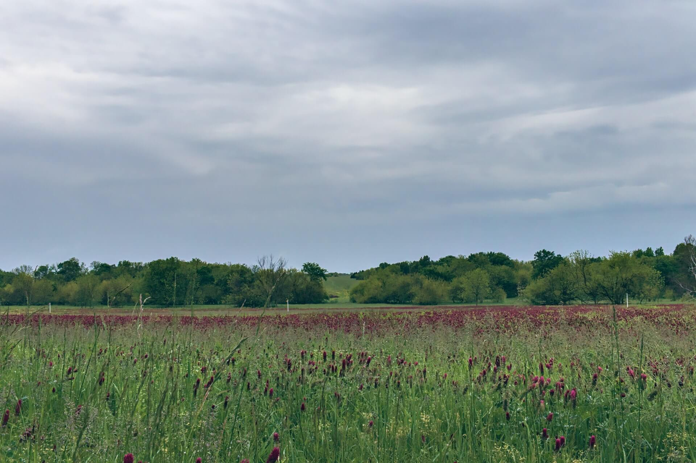
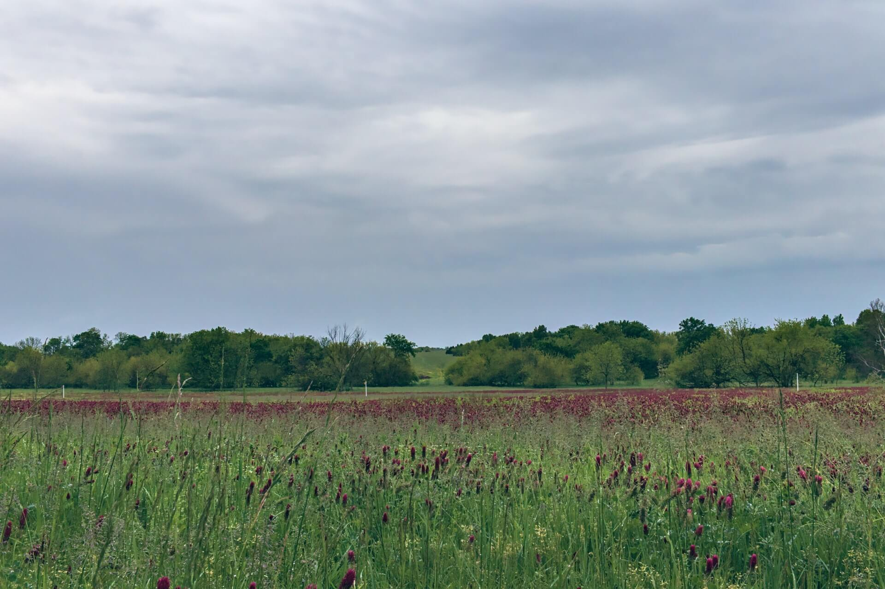

Latest Posts
{% for record in records %}
{% if record.image_link %}
 {% else %}

{% endif %}
{% else %}

{% endif %}
{% endfor %}
Green manures are plant species grown before, after, or between cash crops for the benefits they bring in relation to soil fertility, pest and weed suppression, biodiverstiy, and soil health. They can be an important part of land management for horticultural enterprises and farms, particularly in an organic context. Green manures can be grown as a single species or as a multi-species mix.
There are many different species and species mixes that are considered green manures or cover crops and each one has a particular application and is suited for different conditions. Some green manures, like clover, fix nitrogen from the air and reduce the need for the application of synthetic fertilizer. Others may be beneficial for pollinating insects or for soil conditioning.
The purpose of the site is to be a repository of information about green manures. We welcome growers of all levels of experience to share their experiences about different species and growing techniques and to learn from each other. The site is sponsored by MS3 Seeds and we take the ooportunity that gives us to present new information about seed mixes available to buy from MS3 Seeds. There is no requirement to become a customer of MS3 Seeds to use the site. Welcome!